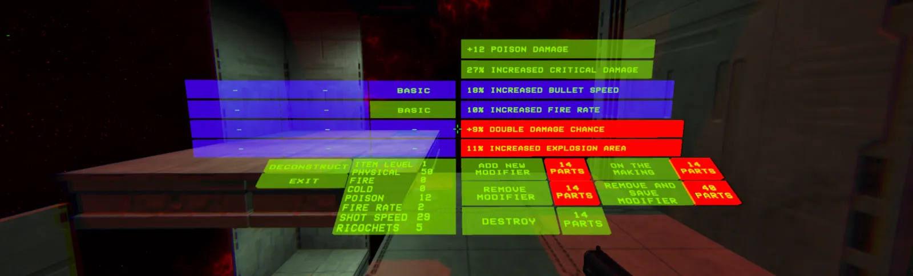
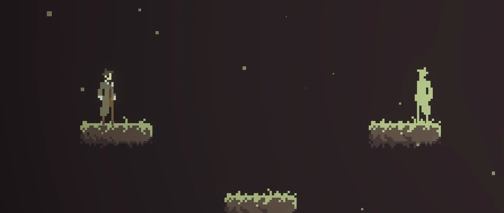
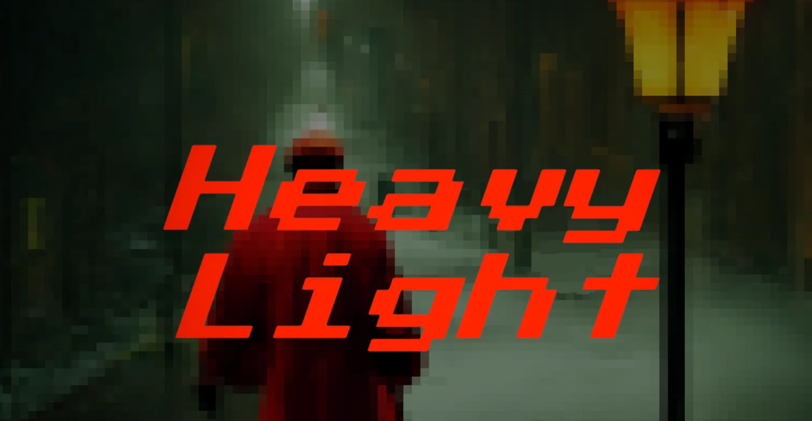
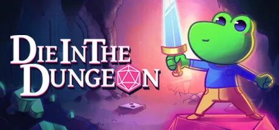
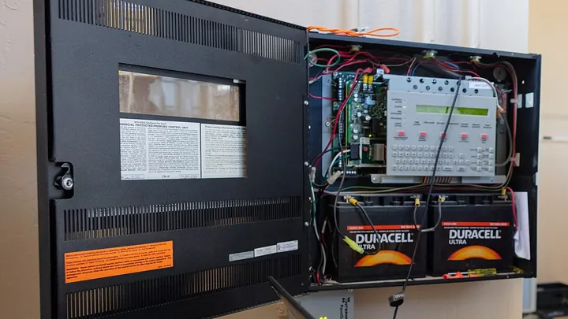

Sebastião Freitas
Worlds, and the systems that make them fun.
The bridge needs the long side of your screen.
Turn your phone sideways.
A horror game where the debug console is the main mechanic.
Full in-game Linux-style terminal with command history; edit any object's properties at runtime — set weight negative and it leaves the floor.

First-person roguelike.
The special run scales on player skill instead of stats, so a lucky build can't delete a boss in one shot. 50+ boons, craftable weapons that persist between runs.

A precision platformer on the HeavyLight base.
Thirty levels, pins, a shadow you plant and teleport back to, and silhouettes that switch between safe and deadly. Four new mechanics, built in less time than the original.

2D puzzle platformer built around one rule: light carries momentum.
It pushes crates, and it pushes you. Shipped for WebGL and reused as the base for Conclusus.

